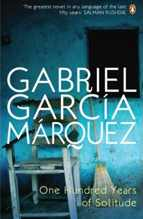

Leaf Storm | One Hundred Years of Solitude | Autumn of the Patriarch

Leaf Storm is the common translation for Gabriel García Márquez's novella La Hojarasca. First published in 1955,[1] it took seven years to find a publisher
One Hundred Years of Solitude (Spanish: Cien años de soledad, 1967), by Gabriel García Márquez, is a novel which tells the multi-generational story of the Buendía Family, whose patriarch, José Arcadio Buendía, founds the town of Macondo, the metaphoric Colombia.
The Autumn of the Patriarch (original Spanish title: El otoño del patriarca) is a novel written by Gabriel García Márquez in 1975. A "poem on the solitude of power" according to the author, the novel is a flowing tract on the life of an eternal dictator. The book is divided into six sections, each retelling the same story of the infinite power held by the archetypical Caribbean tyrant.